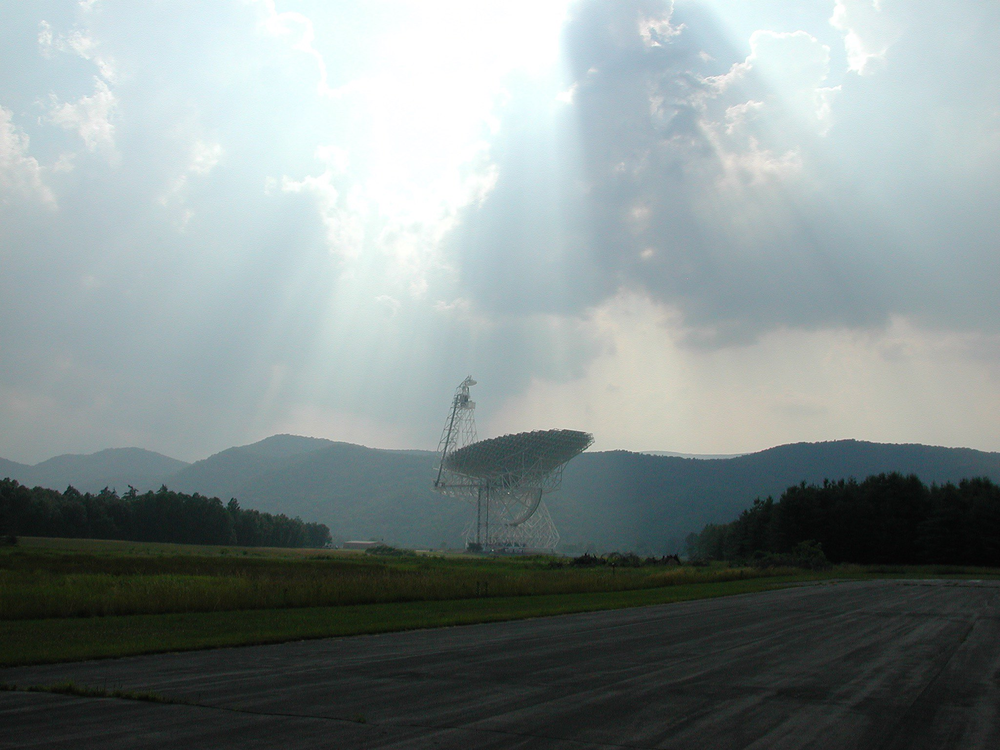

| Wiki Home |
| Cyclostationarity |
| Artificial DM Search |
| Rubin Nongravs |
| Dark Comets |

Projects Wiki Home Page |
||||||||||
by Ellie White |
||||||||||
 | ||||||||||
Image courtesy NSF / GBO / AUI |
||||||||||
|
This is a landing page for a wiki where I will store information about projects I am currently working on. Here is a table of contents:
|